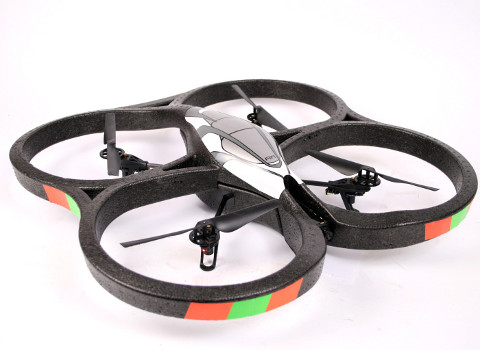
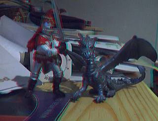

Reading and Writing Video Files

Read Video Data
The class Hornetseye::AVInput allows you to capture frames from videos using the FFMpeg library. The example program shows how to display a video.
require 'hornetseye_ffmpeg'
require 'hornetseye_xorg'
include Hornetseye
input = AVInput.new 'http://peach.themazzone.com/durian/movies/sintel-1024-surround.mp4'
w, h = (input.width * input.aspect_ratio).to_i, input.height
X11Display.show(w, h, :frame_rate => input.frame_rate) { input.read }

Using FFMpeg it is also possible to decode H.264 live streams. Here is an example to read and display the video stream from a Parrot AR.Drone 2.0 with a small Ruby program.
require 'hornetseye_ffmpeg'
require 'hornetseye_xorg'
include Hornetseye
input = AVInput.new 'tcp://192.168.1.1:5555'
X11Display.show { input.read }
Read Audio Data
The following example reads data from an audio file. The data is written to the audio output device. Note that currently one has to catch the exception occurring at the end of the stream.
require 'hornetseye_ffmpeg'
require 'hornetseye_alsa'
include Hornetseye
input = AVInput.new 'http://www.kozco.com/tech/LRMonoPhaset4.wav'
alsa = AlsaOutput.new 'default', input.sample_rate, input.channels
begin
while true
alsa.write input.read
end
rescue RuntimeError
end
Read Video and Audio Data
It is also possible to retrieve audio frames if the video file offers an audio stream. The audio frames are two-dimensional arrays with the first dimension indicating the number of audio channels (i.e. 1=mono, 2=stereo). The following example plays synchronised video and audio.
require 'hornetseye_ffmpeg'
require 'hornetseye_xorg'
require 'hornetseye_alsa'
include Hornetseye
input = AVInput.new 'http://peach.themazzone.com/durian/movies/sintel-1024-surround.mp4'
w, h = (input.width * input.aspect_ratio).to_i, input.height
alsa = AlsaOutput.new 'default', input.sample_rate, input.channels
audio_frame = input.read_audio
X11Display.show w, h, :title => 'FFMpeg', :output => XVideoOutput do |display|
video_frame = input.read_video
while input.audio_pos < input.video_pos + 0.2
alsa.write audio_frame
audio_frame = input.read_audio
end
t = input.audio_pos - (alsa.delay + audio_frame.shape[1]).quo( alsa.rate )
display.event_loop [ input.video_pos - t, 0 ].max
video_frame
end
Record Video and Audio
This example is about recording audio and video in real-time. The frame rate needs to be specified ahead of time. It might be necessary to reduce the value if the camera or the computer are too slow.
require 'hornetseye_v4l2'
require 'hornetseye_alsa'
require 'hornetseye_xorg'
require 'hornetseye_ffmpeg'
include Hornetseye
FRAME_RATE = 8
camera = V4L2Input.new '/dev/video0' do |modes|
modes.each_with_index do |mode,i|
puts "#{i+1}. #{mode.inspect}"
end
modes[STDIN.readline.to_i - 1]
end
w, h = camera.width, camera.height
audio = AlsaInput.new 'default'
output = AVOutput.new 'test.avi',
4000000, w, h, FRAME_RATE, 1, AVOutput::CODEC_ID_MPEG4,
true, 128000, audio.rate, audio.channels, AVOutput::CODEC_ID_MP3
t = Time.new.to_f
c = 0
X11Display.show w, h, :title => 'FFMpeg', :output => XVideoOutput do
img = camera.read
output.write_video img
output.write_audio audio.read(audio.rate / FRAME_RATE)
c += 1
puts c / (Time.new.to_f - t) if c % FRAME_RATE == 0
img
end
Anaglyph Videos

One can download 3D stereo videos from Youtube and convert them to a red-cyan anaglyph video as follows. To download videos from Youtube, one can can use the Unplug add-on for Firefox.
require 'hornetseye_ffmpeg'
require 'hornetseye_xorg'
include Hornetseye
raise "Syntax: ./anaglyph [input] [output]" if ARGV.size != 2
input = AVInput.new ARGV[0]
w2, h2 = input.width, input.height
w, h = w2 / 2, h2 # h2 * 2 / 3
output = AVOutput.new ARGV[1], 4000000, w, h, input.frame_rate, 1, nil, true, 128000,
input.sample_rate, input.channels, nil
y = (h2 - h) / 2
X11Display.show do
img = input.read_video.to_ubytergb
begin
output.write_audio input.read_audio
end while input.audio_pos < input.video_pos
left = img[0 ... w, y ... y + h]
right = img[w ... w2, y ... y + h]
result = MultiArray.ubytergb w, h
result.r, result.g, result.b = left.r, right.g / 2, right.b / 2
output.write_video result
end